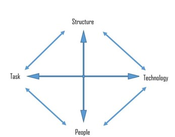
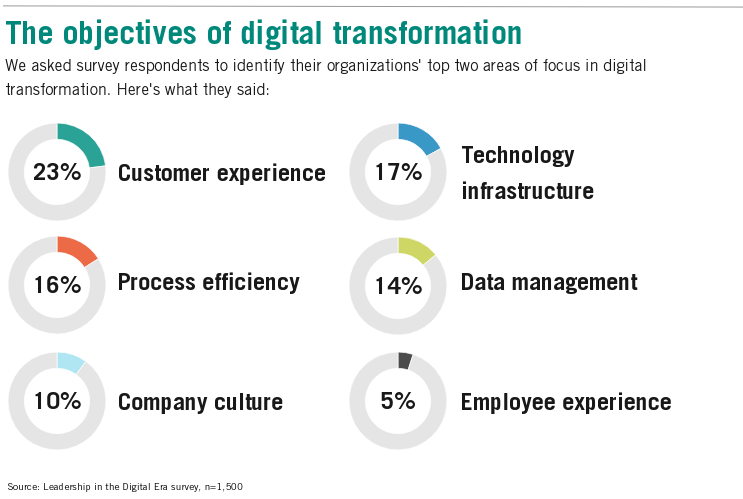
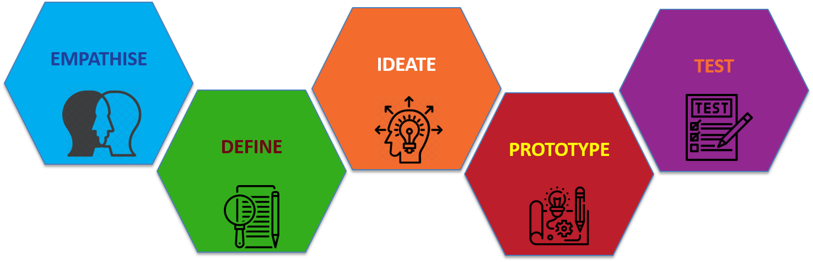
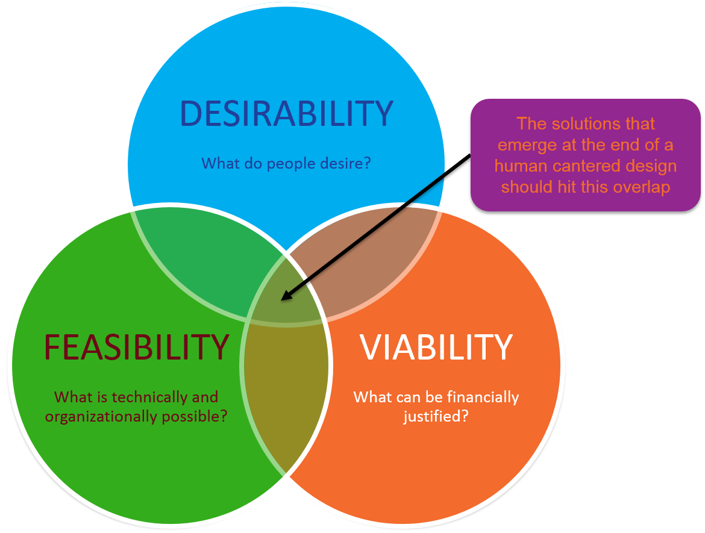

Preparing for Success
At its core digital transformation is about change management, having a clear ideas of what you are trying to achieve, understanding how to implement it and making sure the benefits are realised in both the short and longer term.
Digital transformation is not just about the technology, as Leavitt’s Diamond Model illustrates the interdependencies of technology, structure, task, and people mandate a more holistic approach in order to realise the benefits.
In the context of a digital transformation programme the four elements included in Leavitt’s model are:
- Technology – Both standard business applications and bespoke software and models used to enhance the company capabilities.
- Task - The desired outcomes of the digital transformation and the iterative capabilities that will be developed to get there.
- People – The employees in the company and the expertise, knowledge and skills they possess.
- Structure – The activities performed by employees the departments and hierarchies in the organisation and how they interact with each other.
Where the digital transformation is targeted at developing the services offered to customer’s additional consideration as to the associated business model and branding should also be considered.
Technology
CRM / ERP
A CRM / ERP system provides the backbone of most company data warehouse. The first step is to see in these systems have, or could be developed to provide the required data. If it does then the first approach should be to utilise this source.
There are a myriad of comprehensive solutions on the market, including offerings from Salesforce and Microsoft, however these can quickly get expensive so it is worth considering open source alternative, for which our favourite is Dolibar.
Master Data Management
The value of the data held within the CRM and / or ERP system is a function of both
- Data Accessibility – To allow the value to be extracted from the data held within the systems it is important that it can be efficiently imported into the data models and applications to be constructed as part of the wider digital transformation programme.
- Data Quality – The data held in the systems needs to be accurate and up to date.
The role of the Data Architect we defined later is to maintain a clear understanding of
Bespoke applications and models
Despite the strength of these systems they usually fail to capture all the required data, especially if you are working at a more business process level. If this is, where you find yourself a core part of your digital transformation journey will be to establish a company data warehouse. In the Analyse and Productionise sections of this site we introduce some of the key considerations when building this capability.
Task
While we promote the idea of discovery based transformation, iteratively developing and testing capabilities to build an overall capability, it is important to frame these against a higher level objective. Without a well-defined design challenge, it’s hard for the team to know what they are aiming for or to judge how successful they have been
A survey conducted by Harvard Business School identified that the principle objectives of digital transformation programmes can be summarised into 6 categories.
From which a design challenge can be formulated along the lines of:
| How might we | .... Help / Organise / Allow .... |
.... Person / Group .... |
|
| to | .... Need .... |
so that | .... Outcome .... |
Having set a design challenge the work of the team is to identify how this could be achieved and develop an innovative solution. Design thinking is an approach to break down traditional human behaviours that can present a barrier to innovation, which include:
- Conventionality– Using conventional techniques to solve problems results in conventional solutions. To be truly innovative we need to find new ways of working. Design thinking provides an approach to engage diverse voices to develop a rich understanding of the problem.
- Risk Adversity – In a risk adverse culture the tendency is to kill off the novel and innovative ideas in favour of safer and better understood solutions. Design thinking promotes a culture of experimentation and failing fast to ensure novel solutions get properly explored.
- Ownership- An innovation won’t succeed unless the company employees get behind it. Design thinking provides a methodology to involve people in the process of generating ideas, winning support and ensuring ownership of the developed solutions.
Design thinking provides a range of techniques to develop and test assumptions from a users perspective. Iterating through the 5 phases shown below
- Empathize - Immersion in the customer experience produces data, which is transformed into insights,
- Ideate – Potential solutions are then being developed
- Define- The insights are then consolidated and refined to define the critical success criteria.
- Prototype – Examines these proposed solutions through the development of low fidelity models.
- Test - Using the models teams can test the assumptions and better understand how users would interact with the solution.
In summary, the design-thinking process overcomes traditional barriers to creativity and enables superior solutions to be realised. Involving a diverse group of stakeholders in a fun and engaging process to define the problem and the development of solutions, helps to develop commitment to change across the organisation.
Key skills / Roles
There are 7 key roles that need to be satisfied in order to successfully deliver and sustain a digital transformation. While we believe your long term objective should be to develop these capabilities internally you're probably going to need a hand to get started. With experienced practitioners across all digital change management disciplines EMPEDATA offer a unique capability to both augment and coach your existing team.
The key roles we consider essential to your success are:
- Transformation Leader / Product Owner - Digital transformation is a business-model reinvention, it requires different functions across the organization to work together in new ways. The key role for the transformation leader is to identify the strategic goals of the programme and driving the cross organisational changes required to fully realise the benefits digital technologies can deliver.
- Data Steward - Ensure there is a clear policy regarding where data is held and that it accurate, complete and up to date. Security and accessibility needs to be controled managing user permissions and ensuring compliance with the necessary legislation eg GDPR
- Design thinking workshop facilitation / System Analyst - Lead collaborative working sessions that utilize design thinking practices and techniques to define and test a user story. These low fidelity requirements are then refined to provide a more detailed proposal that enable a technical solution to be developed.
- DevOps Engineers / Application Developers - Individuals capable of building applications and data pipeline in accordance of the defined data architecture rules to deliver the requirements as specified by the system analyst.
- Data Scientists / Analyst - While Data Scientists are generally a dedicated resource capable of performing complex processing of data and development of advanced mathematical and machine learning models. While an analysts can generally will work within a function developing dashboard using low code Business intelligence tools
- Scrum Master / Agile Project Manager - Responsible for ensuring the team follows agile processes and practices, establishing an environment where the team can be effective, clearing obstacles and protecting the team from outside interruptions and distractions.
- Process / Application Owner - Either the principal user or able to represent the users interests, consolidating feedback, informing design decisions and evaluating the suitability of the developed solutions.
Business Model
A business model allows an organisation to evaluate it’s health in the market to assess the strengths, weaknesses, opportunities and threats (SWOT). It can be helpful to consider how a start-up would disrupt the existing business model through either:
- Using digital technology to deliver the services you currently offer
- Fundamentally change the cost structure of the business free from the constraints of a legacy business.
Business model innovation is then about leveraging the technology to transform how value is delivered to customers, how this value will be promoted, delivered, and monetized and the resources and costs to provide the service.
Throughout this process it is essential to constantly evaluate that the proposed services satisfy the 3 key tenants of innovation.
These concepts, supported with real with case studies and suggested templates are provided in the book Business Model Generation.
Digital Identity
The final, and much overlooked consideration when using WebApps to drive a digital transformation is ensuring the identity and brand your application presents aligns with the company values. Whether the platform needs to be given an identity within the organisation or the digital transformation programme used as an opportunity to rebrand the company entirely are key decisions that need to be made. In the context of a WebApp there are 3 main considerations:
Selecting a name
The WebApps you create will need to have an address which can be achieved through any one of following three options:
- A website will normally use the subdomain www but alternative subdomains can be used with an existing domain name to provide a dedicated web address.
A good example of this is
https://maps.google.com - Alternatively a subdirectory after the main domain can be used as in
https://www.google.com/maps - The final option is to secure a dedicated domain however it can be difficult and expensive to secure a desirable ".com" top level domain (TLD). In recent years the addition of new TLDs such as .digital or .biz increases the available options to be more creative and descriptive.
Whatever the solution you are looking for the name you choose needs to be memorable and aligns with the brand you are trying to create.
Creating a logo
When building a WebApp the logo is the thing with which people will identify, it will feature prominently in the header of the website, in the tab on the browser and as an icon when creating links on the users home screen. When looking to extend the application into the customer community the logo may also be required to support wider marketing of the capability. When selecting the a logo there are four main principals that should guide your selection.
- Appropriateness - The logo should convey your brand message to the target audience.
- Simplicity - A minimal and simple logo tends to attract people more easily.
- Scalability - The logo design should work whether it is the size of a favicon in the tab bar of your browser or being used on a giant billboard.
- Timelessness - It takes time to gain brand recognition, frequently changing your identity can damage trust so choose a design that will last.
Whatever the solution you are looking for the name you choose needs to be memorable and aligns with the brand you are trying to create.
Design system
Design systems contain style guide information setting colours, typography, and styles used throughout the user interface (UI). The collection of standards, principles and common UI elements ensure you create a consistent feel across all applications. Material Design (https://material.io/) ,developed by Google, establishes a standard for designing and creating websites and apps with the aim of bringing order to design styles and form a useful basis for application development.